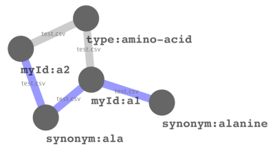

|
|
The MetMask Project [ Project page | Download | Forum | Manual ][ Try it out | Features ] |
What is MetMask?
MetMask is a tool for keeping track of metabolite identifiers. It is meant to make it easier to convert a set of identifiers of both metabolites and analytes to other types of identifiers. This is useful for applied day-to-day metabolomics research and can make data analysis less of chore.
The easiest way to explain what this tool does is by an example. Consider the situation where you have a dataset which was annotated the following messy identifiers list, in a file called ids.txt:
1096.1_l-alanine[2tms] alanine, dl- 1881.6_d-(+)-glucose[5tms_1meox] glucose_maj_1meox_5tms sucrose, d- (8tms)
which correspond to entries in your spectra reference file. To interpret the data you might want other associated information such as the CAS numbers of the parent metabolites. You can do this with your own set of scripts, or you could do it using MetMask:
metmask < ids.txt -g preferred,cas -Q -f
l-alanine,2899-44-7 l-alanine,2899-44-7 beta-d(+)glucose,50-99-7 beta-d(+)glucose,50-99-7 sucrose,57-50-1
querying for the "preferred synonym" and the CAS number.
Try it out!
MetMask is meant to be downloaded and used locally because that way you can change the database to fit your own needs. But of course it is nice to try it out first so below you can query the database that is distributed with the latest version of MetMask.
Type in your query as a single identifier, choose which type of identifier you entered (or let MetMask guess), which output identifiers you want and hit go. Warning: no guarantee is given about correctness, use at your own risk.
Features
-
Incorporate an arbitrary list with any kind of identifier and keep
track of which identifier is associated with which.
- Keep track of which input sources.
- Link identifiers if the input imply that they are the same. For example, if one source links A with B and another B with C then the created database will link A with C too.
- Import widely used databases such as the main NIST library, the KEGG and PlantCyc compounds files.
- Query the database and extract one or all related identifiers for any known identifier.
- Output in different formats, including graphs which can easily be visualized using e.g. cytoscape or R (with Rgraphviz).

Applications
- Merge datasets from different source
- Perform functional class scoring analysis such as that commonly done for microarrays.
Interested?
Check out the Project page for downloads, forums etc. Or read the manual for more details.
The forums are also the right place to put bug reports, feature request are any other kind comments.
Availability
- GNU Public License (free open source software).
- Cross-platform (tested and developed for Linux and WinXP)
- Also accessible from R by using the metmask.db package (depends on an inofficial version of Bioconductors AnnotationDbi which can be found at the MetMask download page.
Date: 2009-11-25 17:42:21 JST
HTML generated by org-mode 6.32trans in emacs 23